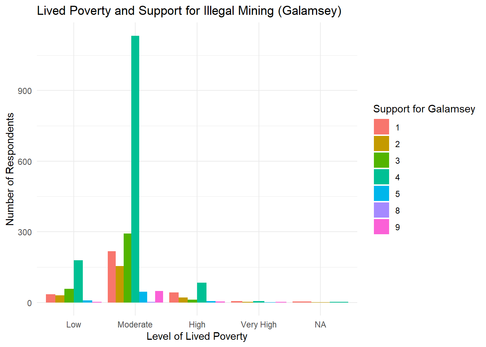

Galamsey, Ghana’s term for illegal small-scale mining, has contaminated over 60% of the country’s water sources with heavy metals, yet it persists because it provides livelihoods for hundreds of thousands of Ghanaians with few economic alternatives. My research question then, to find out if there are any trade-offs between care for the environment and economic wellbeing is:
To what extent do economic hardship and environmental concerns influence attitudes toward illegal mining in Ghana?
Understanding this matters because it may explain why the act persists despite its damaging effects. If support for illegal mining is driven by poverty rather than indifference to environmental harm, then criminalizing the act without addressing its economic roots may not change public behaviour.
Existing research shows that illegal mining in Ghana is shaped by both economic necessity and environmental concern. A study that examinedthe gaps between mining laws and galamsey’s persistence highlighted that the act provides livelihoods for many while causing environmental damage. The study also notes that economic pressures like unemployment push participation. Similarly, a Global Citizen article reports on the issue, emphasizing on the role of poverty in driving participation though there are negative effects. This tension provides the foundation for investigating how individuals in Ghana form attitudes toward illegal mining.
Hypothesis
Individuals experiencing greater economic hardship will be more likely to express supportive or tolerant attitudes toward illegal mining in Ghana, even when they recognize its environmental harms.
This hypothesis is based on the expectation that economic necessity can shape how people evaluate environmentally harmful activities. Research on illegal mining in Ghana shows that the act continues partly because it provides an important short term source of income for individuals for limited employment opportunities. The lack of alternative jobs pushes many individuals, especially those who have lost agricultural income, to turn to mining as a means of survival. An article by Global Citizen also reveals that the illegal miners “rely on daily revenue to provide food and shelter for their families”. This would follow Maslow’s Hierarchy of Needs that put physiological needs as priority before safety needs, which might include environmental concern. When individuals rely on or benefit from this activity, they may be more willing to overlook or downplay its environmental consequences. Those with more economic security will have less favorable attitudes toward illegal mining in Ghana, if for example, they have a more steady, sustainable job. Others may be unsupportive of galamsey as well if the environmental damage is visible like contaminated water from taps, dying fish in local rivers, or deaths from mercury exposure.
Data and Variables
This study draws on Afrobarometer Round 7 conducted in Ghana in 2017 by the Afrobarometer research organization. The unit of analysis is the individual respondent and the sample contains approximately 2,400 Ghanaian citizens above the age of 18.
The specific variables I used to test my hypothesis were Galamsey Support as the dependent variable, measured by the survey question asking whether citizens should be able to engage in illegal small-scale mining vs. citizens should not engage in it for any reason. This is coded on a five-point scale from strongly disapprove to strongly approve. The primary independent variable is Lived Poverty Index, constructed by averaging five items asking how often respondents went without food, clean water, medical care, cooking fuel and cash income in the past year, coded from 0(never) to 4(always), with higher scores indicating greater hardship.
library(ggplot2)ggplot(r7_data1, aes(x = poverty_cat, fill =factor(galamsey_support))) +geom_bar(position ="dodge") +labs(title ="Lived Poverty and Support for Illegal Mining (Galamsey)",x ="Level of Lived Poverty",y ="Number of Respondents",fill ="Support for Galamsey" ) +theme_minimal()

Regression Model
The main regression model I will use is an OLS model, to test whether economic hardship and environmental concern pull in opposite directions, and which dominates.
The key coefficient is β1, which captures the relationship between economic hardship and galamsey support after holding all other variables constant. The hypothesis would predict β1 > 0, meaning higher poverty is associated with greater support for galamsey. Β2 looks at if environmental concern reduces support for galamsey, where β2 < 0. The remaining coefficients serve as controls which may confound the main relationship. These account for structural differences across respondents in water satisfaction, urban or rural context, employment status, education, region and party affiliation. ϵi is the error term.